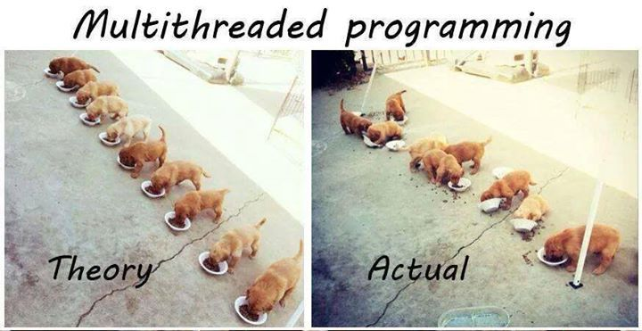
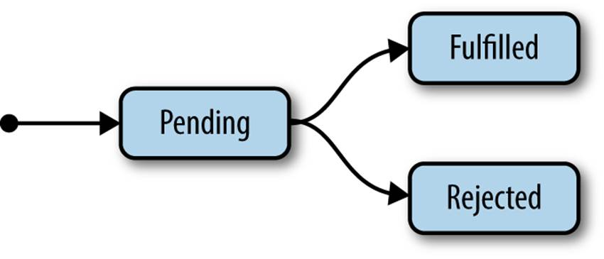

Setup
Some Text
class SomeCode{
println("Hello audience!")
}
... all about the future
The Omnipotent Monad
Patrick Trapp / @VivaceVivoWhat's the problem?
We need utilization of multiple cores using- Threads & Locks
- Callbacks
- Futures
- Actors... etc. etc.

Callbacks
A callback is a piece of executable code that is passed as an argument to other code, which is expected to call back (execute) the argument at some convenient time. The invocation may be immediate as in a synchronous callback, or it might happen at a later time as in an asynchronous callback.
a callback
class Meetup {
def addSpeaker(who: String, doTalk: (String) => String) = {
println("prepare event...")
println(s"next speaker: $who!")
doTalk(who)
}
}
// -- -- 8< -- -- -- -- -- -- -- -- --
def performTalk(who: String) = {
"Hello everybody!"
}
new Meetup().addSpeaker("Patrick", performTalk)
it's getting tricky
- when we call multiple async methods in a row
- Continuation Passing Style
- with exceptions, try, catch
- with controll structures

Future to the rescue
A Future is an object holding a value which may become available at some point.- encapsulate the hard stuff
- provides a nice API
- create a Future with static successful, failed or the apply-method
- use callbacks on Future (onSuccess, onFailure, onComplete)
simple Example (with callback)
import scala.concurrent.{future, Future}
import scala.concurrent.ExecutionContext.Implicits.global
def prepareTalk(topic: String):Future[String] = Future {
// this will take some time...
s"Talking about $topic: bla bla bla!"
}
prepareTalk("Future").onSuccess{case script =>
out.println(script)
out.println("Thank you")
}
Using a Try...
import scala.concurrent._
import scala.concurrent.duration._
import scala.concurrent.ExecutionContext.Implicits.global
import scala.util.{Success, Failure}
def prepareTalk(topic: String):Future[String] = Future {throw new Exception("Panic!!!")}
prepareTalk("about Try...").onComplete {
case Success(script) => out.println(script)
case Failure(ex) => out.println("This Meetup has been canceled")
}
Future's apply
def apply[T](body: =>T)(implicit executor: ExecutionContext): scala.concurrent.Future[T] = {
val runnable = new PromiseCompletingRunnable(body)
executor.prepare.execute(runnable)
runnable.promise.future
}
Future - Promise
how to make a Promise...
- Write once data structure
- opt. derive a Future
- complete as success
- complete as failure
teasing a Promise...
import scala.concurrent._
import scala.concurrent.ExecutionContext.Implicits.global
type Cat = String
val p = Promise[String]()
val a = p.isCompleted
p.success("Meow!")
val b = p.isCompleted
Promising
import concurrent._
import scala.language.postfixOps
import concurrent.duration._ ;import java.util.concurrent.Executor;implicit val synchronousExecutionContext = ExecutionContext.fromExecutor(new Executor {def execute(task: Runnable) = task.run()})
type Slides = String
def shareSlides(doI : Promise[Slides]):Promise[Slides] = {
doI.completeWith(Future{
out.println("doing one last edit...")
"slide deck"
})
}
val do_I = Promise[Slides]()
val iPromise = shareSlides(do_I)
val text = Await.result(iPromise.future, 1 seconds)
All nice and wonderful - but...
... so basicly we can:
Await(myFuture, Duration.Inf)myFuture.isCompletedmyFuture.value... but we won't!
Monadic operations
yes! the Scala Future is a monad - some claim it's omnipotent...rationale
val dateOfTalk = Future {
meetup.suggestTalk("All about...")
}
dateOfTalk onSuccess { case date =>
val slides = Future {
if (isEnoughTimeToPrepare(date)) prepareTalk("about Future", date)
else throw new Exception("Panic!!!")
}
slides onSuccess {
case text => println("Welcome... " + text)
}
}
same with 'map'
val dateOfTalk = Future {
meetup.suggestTalk("All about...")
}
val preparedScript = dateOfTalk map { date =>
if (isEnoughTimeToPrepare(date)) prepareTalk("about Future", date)
else throw new Exception("Panic!!!")
}
preparedScript onSuccess {
case _ => println("Welcome... " + text)
}
other monadic functions
foreach
flatMap
filter
transform
zip
for comprehension
import scala.concurrent._
import scala.concurrent.duration._
import scala.language.postfixOps
;import java.util.concurrent.Executor;implicit val synchronousExecutionContext = ExecutionContext.fromExecutor(new Executor {def execute(task: Runnable) = task.run()})
val talk1 = Future { 25 minutes}
val talk2 = Future { 45 minutes}
val meetupDuration = for {
a <- talk1 // returns Future(25 minutes)
b <- talk2 // returns Future(45 minutes)
} yield a + b
//is translated to:
//talk1 flatMap { (a) => talk2 map { (b) => a + b } }
Await.result(meetupDuration, 1 seconds)
Recover failure
import scala.concurrent.duration._
import scala.language.postfixOps
import scala.concurrent._ ;import java.util.concurrent.Executor;implicit val synchronousExecutionContext = ExecutionContext.fromExecutor(new Executor {def execute(task: Runnable) = task.run()})
val question = Future{"what if..."}
def answerQuestion(q:String) = "Bla bla bla..."
val answer: Future[String] = question map {
q => answerQuestion(q)
} recover {
case e:Exception => "Sorry, I don't know."
}
Await.result(answer, 1 seconds)
failed projection
If the future fails, the projection returns a future with a value of type Throwable.If the future succeeds, the projection fails with a NoSuchElementException.
import scala.concurrent._
import scala.concurrent.ExecutionContext.Implicits.global
import scala.concurrent.duration._
import scala.language.postfixOps
val f = Future { 5 }
val p = f.failed
Await.result(p, 1 seconds)
and then...?
import scala.concurrent._ ;import java.util.concurrent.Executor;implicit val synchronousExecutionContext = ExecutionContext.fromExecutor(new Executor {def execute(task: Runnable) = task.run()})
val f = Future { 5 }
f andThen {
case r => println("perform side effects")
} andThen {
case t => println("in exact order: " + t)
}
f.value
Execution Context
- By default, futures and promises are non-blocking
- The global execution Context uses limited threads!
- never block in a Future! (use scala.concurrent.blocking{})
- dedicated ExecutionContext for long lasting blocking operations (thread pool)
Runtime.getRuntime.availableProcessors()
Future.sequence
import scala.concurrent.duration._
import scala.language.postfixOps
import scala.concurrent._ ;import java.util.concurrent.Executor;implicit val synchronousExecutionContext = ExecutionContext.fromExecutor(new Executor {def execute(task: Runnable) = task.run()})
def processNumber(n:Int) = Future{n * n}
val l = List(1,2,3,4,5).map(processNumber)
val s = Future.sequence(l)
Await.result(s, 1 seconds)
Big thanks to
- INOIO - OOSE
- https://github.com/hakimel/reveal.js
- http://docs.scala-lang.org/overviews/core/futures.html
- http://danielwestheide.com/blog/2013/01/16/the-neophytes-guide-to-scala-part-9-promises-and-futures-in-practice.html
- http://scala.hamburg
- @ScalaHamburg